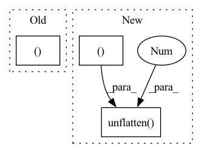

Pattern ID :17152

Before Change
def embed(self, x: Tensor, h=None) -> Tuple[Tensor, Tensor]:
x_gru, h = self.gru(x.permute(0, 2, 3, 1).flatten(2), h)
x_gru = self.gru_fc(x_gru).unflatten(2, (-1, self.inner_ch)).permute(0, 3, 1, 2)
x = self.gru_skip(x) + x_gru
return x, h
After Change
x = self.lin_emb_in(input)
x = x.permute(0, 2, 3, 1).flatten(2)
x_gru, h = self.gru(x, h)
x_gru = x.unflatten(2, (self.inner_freqs, -1)).permute(0, 3, 1, 2)
x_gru = self.lin_emb_out(x_gru)
x = self.gru_skip(input) + x_gru
return x, h
In pattern: SUPERPATTERN
Frequency: 4
Non-data size: 3
Instances
Fragment ID: 57278931
Project Name: rikorose/deepfilternet
Commit Name: 94033654ad6c1ce4973b501aabc3a9715664cc19
Time: 2022-04-12
Author: h.schroeter@pm.me
File Name: DeepFilterNet/df/multistagenet.py
M Class Name: FreqStage
N Class Name: FreqStage
M Method Name: embed(3)
N Method Name: embed(3)
M Parent Class: nn.Module
N Parent Class: nn.Module
M File Name: DeepFilterNet/df/multistagenet.py
N File Name: DeepFilterNet/df/multistagenet.py
M Start Line: 437
M End Line: 439
N Start Line: 436
N End Line: 441
'>
Before Change
x = torch.randn(4, 4, 1)
y = torch.randn(4, 4, 2)
return (
x[0, 2:],
x.detach(),
x.detach_(),
x.diagonal(),
x.expand(-1, -1, 3),
x.expand_as(y),
x.select(0, 1),
x.unflatten(1, (2, 2)),
x.unfold(1, 2, 2),
x.view(16),
x.view_as(torch.randn(16)),
)
After Change
x.expand(-1, -1, 3),
x.expand_as(y),
x.select(0, 1),
x.unflatten(1, (2, 2)),
x.unfold(1, 2, 2),
x.view(16),
x.view_as(torch.randn(16)),
'>
Fragment ID: 57278928
Project Name: pytorch/pytorch
Commit Name: 91ef3c82615d6ede05d5b86f1bd5571ea95e4ef1
Time: 2022-03-28
Author: linbin@fb.com
File Name: test/mobile/model_test/tensor_ops.py
M Class Name: TensorViewOpsModule
N Class Name: TensorViewOpsModule
M Method Name: tensor_view_ops(1)
N Method Name: tensor_view_ops(1)
M Parent Class: torch.nn.Module
N Parent Class: torch.nn.Module
M File Name: test/mobile/model_test/tensor_ops.py
N File Name: test/mobile/model_test/tensor_ops.py
M Start Line: 265
M End Line: 277
N Start Line: 263
N End Line: 277
'>
Before Change
x = torch.randn(4, 4, 1)
y = torch.randn(4, 4, 2)
return (
x[0, 2:],
x.detach(),
x.detach_(),
x.diagonal(),
x.expand(-1, -1, 3),
x.expand_as(y),
x.select(0, 1),
x.unflatten(1, (2, 2)),
x.unfold(1, 2, 2),
x.view(16),
x.view_as(torch.randn(16)),
)
After Change
x.expand(-1, -1, 3),
x.expand_as(y),
x.select(0, 1),
x.unflatten(1, (2, 2)),
x.unfold(1, 2, 2),
x.view(16),
x.view_as(torch.randn(16)),
'>
Fragment ID: 57278929
Project Name: pytorch/pytorch
Commit Name: 28a4b4759add0b3eb0f4c34a1e042be4f93e976e
Time: 2022-03-30
Author: linbin@fb.com
File Name: test/mobile/model_test/tensor_ops.py
M Class Name: TensorViewOpsModule
N Class Name: TensorViewOpsModule
M Method Name: tensor_view_ops(1)
N Method Name: tensor_view_ops(1)
M Parent Class: torch.nn.Module
N Parent Class: torch.nn.Module
M File Name: test/mobile/model_test/tensor_ops.py
N File Name: test/mobile/model_test/tensor_ops.py
M Start Line: 265
M End Line: 277
N Start Line: 263
N End Line: 277
'>
Before Change
x = self.enc0(x)
for i, enc_layer in enumerate(self.enc):
intermediate.append(x)
x, _ = enc_layer(x, h[i])
return x, intermediate, h
def decode(self, x: Tensor, intermediate: List[Tensor]) -> Tensor:
After Change
intermediate.append(x)
x = enc_layer(x)
x_gru, h = self.gru(x.permute(0, 2, 3, 1).flatten(2), h)
x_gru = self.gru_fc(x_gru).unflatten(2, (-1, self.inner_ch)).permute(0, 3, 1, 2)
x = self.gru_skip(x) + x_gru
return x, intermediate, h
'>
Fragment ID: 57278934
Project Name: rikorose/deepfilternet
Commit Name: a006640875e1cd0ecad680c379a29276a62a5452
Time: 2022-04-12
Author: h.schroeter@pm.me
File Name: DeepFilterNet/df/multistagenet.py
M Class Name: FreqStage
N Class Name: FreqStage
M Method Name: encode(3)
N Method Name: encode(3)
M Parent Class: nn.Module
N Parent Class: nn.Module
M File Name: DeepFilterNet/df/multistagenet.py
N File Name: DeepFilterNet/df/multistagenet.py
M Start Line: 392
M End Line: 397
N Start Line: 400
N End Line: 405